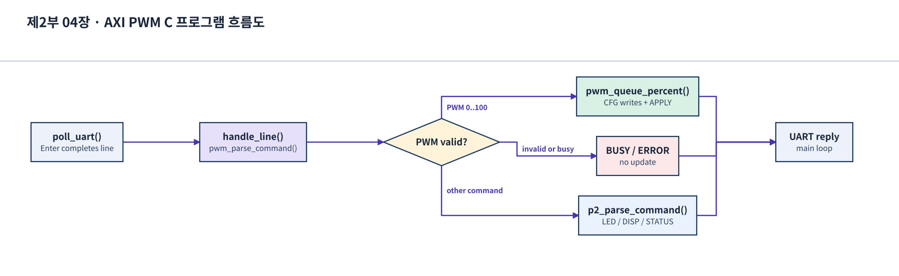

00이 장의 목표
UART 문자열 처리, PWM 레지스터, 03장 버튼 IRQ, 정수형·AMD BSP 함수의 실제 동작을 코드 중심으로 설명합니다.
- 실제 main.c와 동일한 코드
- u8 / u32 / MMIO
- PWM 0..100
- 이전 장 기능 보존
01u8·u32·UINTPTR와 AMD 함수
| 표현 | 소속·의미 | 실제 코드에서 하는 일 |
|---|---|---|
u8 | AMD BSP에서 정의한 부호 없는 8-bit 정수 | pwm_requested_percent에 0~100 저장 |
u32 | AMD BSP의 부호 없는 32-bit 정수 | 레지스터 주소·PERIOD·DUTY·STATUS |
uint8_t | 표준 C <stdint.h>의 8-bit 정수 | 독립 PWM 문자열 parser의 percent |
uint64_t | 표준 C의 부호 없는 64-bit 정수 | period × percent 중간 곱셈 오버플로 방지 |
UINTPTR | BSP에서 주소를 담는 정수 타입 | 03장 SDT Interrupt Parent 형 변환 |
Xil_Out32(addr,value) | AMD MMIO 레지스터 32-bit 쓰기 | PERIOD·DUTY·CONTROL·APPLY 기록 |
Xil_In32(addr) | AMD MMIO 레지스터 32-bit 읽기 | ID 검사, STATUS·ACTIVE 값 확인 |
XUartLite_SendByte(base,ch) | AMD UART Lite 1 byte 송신 | 문자열·십진수 출력 |
XUartLite_RecvByte(base) | AMD UART Lite 1 byte 수신 | CR/LF까지 명령 조립 |
XSetupInterruptSystem(...) | SDT BSP 인터럽트 초기화 API | 이전 03장 버튼 IRQ, 실제 BSP 서명 대조 필요 |
#error | C 전처리기 오류 지시어 | 미확인 AXI 주소/IRQ 설정을 빌드 단계에서 차단 |
중요: 테스트에서 사용한 0x43C3.... 주소는 Mock BSP의 가상 숫자입니다. 실물 주소는 새 XSA로 생성된 xparameters.h와 Address Editor에서 확인해야 합니다.
02poll_uart() → pwm_parse_command() → pwm_queue_percent()

① poll_uart()는 입력된 ASCII(아스키, 영문 문자 코드)를 버퍼에 모읍니다. ② Enter에서 handle_line()을 호출합니다. ③ pwm_parse_command()가 PWM 명령이면 숫자를 검사합니다. ④ pwm_queue_percent()는 Pending이 없을 때 AXI 설정값을 기록하고 APPLY를 요청합니다. ⑤ 다른 명령은 기존 p2_parse_command()로 전달됩니다.
PwmParseResult pwm_cmd = pwm_parse_command(line, &pwm_percent);
if (pwm_cmd != PWM_NOT_COMMAND) {
// PWM 문법 오류 / BUSY / 새 요청 처리
...
return;
}
cmd = p2_parse_command(line, &value); // 기존 LED/DISP/STATUS03주기 100000에서 PWM 50의 실제 기록값
| 순서 | 함수 또는 레지스터 | 변수와 계산 결과 |
|---|---|---|
| 1 | pwm_parse_command("PWM 50",...) | percent 50 |
| 2 | pwm_duty_for_percent(100000,50) | 64-bit 100,000 × 50 ÷ 100 → 50,000 |
| 3 | PERIOD_CFG offset 0x00 | 100,000 |
| 4 | DUTY_CFG offset 0x04 | 50,000 |
| 5 | CONTROL_CFG offset 0x08 | bit0 = 1 (enable) |
| 6 | APPLY offset 0x0C | 1 쓰기, Shadow 설정 예약 |
| 7 | STATUS offset 0x10 | pending=1 → 주기 경계 후 0 |
| 8 | ACTIVE_DUTY offset 0x18 | 적용 후 50,000 |
코드는 100 MHz 조건에서 1 kHz PWM을 목표로 합니다. QUEUE 응답 직후 구동 중인 주기에서는 이전 Duty를 유지하므로 STATUS에 요청값과 활성값을 따로 출력합니다.
PWM 0은 CONTROL Enable도 0으로 기록하여 비활성 상태를 명확히 합니다. PWM 100은 Enable=1, Duty=Period로 100% HIGH를 구현합니다.04기존 명령과 버튼 IRQ를 수정하지 않는 방법
04장 C 프로그램은 main_p2_03.c의 기존 btn_irq_handler(), setup_button_interrupt(), service_button_events(), fnd_commit()을 유지합니다. UART 명령 분기 앞에만 PWM 분기를 추가하고 STATUS 출력 끝에 PWM 항목을 덧붙입니다.
별도 공용 소스 p2_03_logic.c/.h는 03장과 바이트 단위로 동일한 파일을 복사했습니다. 새 PWM 문자열 해석 로직만 p2_04_pwm_logic.c/.h로 분리했습니다.
// 이전 장 명령: 변경하지 않는다.
LED ON / LED OFF
DISP 1234 / DISP 0050 / DISP OFF
STATUS
// 이번 장 추가 명령:
PWM 0 / PWM 25 / PWM 50 / PWM 75 / PWM 10005MicroBlaze V main_p2_04.c 전체 소스
독립 소스 파일 열기 · 332줄
/* P2-04: retain P2-03 commands/button IRQ, add AXI PWM on Basys3 LED1.
* NOTE: Base addresses, Interrupt ID/Parent MUST be read from actual BSP.
* This source intentionally rejects unknown constants before target build.
*/
#include "xparameters.h"
#include "xil_types.h" /* u8, u32, UINTPTR */
#include "xil_io.h" /* Xil_In32, Xil_Out32 */
#include "xuartlite_l.h" /* UART Lite byte functions + FIFO empty check */
#include "xstatus.h"
#include "xil_exception.h"
#ifdef SDT
#include "xinterrupt_wrap.h" /* SDT interrupt API */
#else
#include "xintc.h" /* Classic interrupt controller API */
#endif
#include "p2_03_logic.h"
#include "p2_04_pwm_logic.h" // Reusable PWM string parser and duty calculation
#ifndef P2_04_PWM_BASEADDR
#define P2_04_PWM_BASEADDR 0xFFFFFFFFU
#endif
#if P2_04_PWM_BASEADDR == 0xFFFFFFFFU
#error "Set P2_04_PWM_BASEADDR from CURRENT Vivado Address Editor/xparameters.h"
#endif
#ifndef P2_01_LED_BASEADDR
#define P2_01_LED_BASEADDR 0xFFFFFFFFU
#endif
#ifndef P2_02_FND_BASEADDR
#define P2_02_FND_BASEADDR 0xFFFFFFFFU
#endif
#ifndef P2_03_BTN_BASEADDR
#define P2_03_BTN_BASEADDR 0xFFFFFFFFU
#endif
#if P2_01_LED_BASEADDR == 0xFFFFFFFFU || P2_02_FND_BASEADDR == 0xFFFFFFFFU || P2_03_BTN_BASEADDR == 0xFFFFFFFFU
#error "Set all three AXI IP addresses from CURRENT Address Editor/xparameters.h"
#endif
#if P2_01_LED_BASEADDR == P2_02_FND_BASEADDR || P2_01_LED_BASEADDR == P2_03_BTN_BASEADDR || P2_02_FND_BASEADDR == P2_03_BTN_BASEADDR
#error "Three user AXI IP base addresses must be unique"
#endif
#ifndef P2_03_BTN_INTR_ID
#error "Fill P2_03_BTN_INTR_ID from CURRENT generated BSP interrupt map"
#endif
#ifdef SDT
#ifndef P2_03_BTN_INTR_PARENT
#error "Fill P2_03_BTN_INTR_PARENT (SDT encoded interrupt parent) from actual BSP"
#endif
#else
#ifndef P2_03_INTC_DEVICE_ID
#error "Fill P2_03_INTC_DEVICE_ID from Classic BSP"
#endif
#endif
#if defined(XPAR_XUARTLITE_0_BASEADDR)
#define UART_BASEADDR XPAR_XUARTLITE_0_BASEADDR
#elif defined(XPAR_UARTLITE_0_BASEADDR)
#define UART_BASEADDR XPAR_UARTLITE_0_BASEADDR
#elif defined(XPAR_AXI_UARTLITE_0_BASEADDR)
#define UART_BASEADDR XPAR_AXI_UARTLITE_0_BASEADDR
#else
#error "Check UART Lite base macro in the generated xparameters.h"
#endif
#define FND_VAL_REG 0x00U
#define FND_CTRL_REG 0x04U
#define BTN_PENDING 0x00U
#define BTN_ENABLE 0x04U
#define BTN_PRESSED 0x08U
#define BTN_ID 0x0CU
#define BTN_COALESCED 0x10U
// P2-04 register offsets: 32-bit, byte-addressed.
#define PWM_PERIOD_CFG 0x00U
#define PWM_DUTY_CFG 0x04U
#define PWM_CTRL_CFG 0x08U
#define PWM_APPLY 0x0CU
#define PWM_STATUS 0x10U
#define PWM_PERIOD_ACT 0x14U
#define PWM_DUTY_ACT 0x18U
#define PWM_ID 0x1CU
#define PWM_IP_ID 0x00040001U
#define PWM_PERIOD_TICKS 100000U // AXI Clock이 실제 100MHz일 때 1kHz.
#if P2_04_PWM_BASEADDR == P2_01_LED_BASEADDR || \
P2_04_PWM_BASEADDR == P2_02_FND_BASEADDR || \
P2_04_PWM_BASEADDR == P2_03_BTN_BASEADDR
#error "New PWM IP base must differ from all prior IP addresses"
#endif
#define LINE_CAP 32U
static P2AppState app;
static u8 pwm_requested_percent = 0U;
static volatile u32 irq_counts[8]; // ISR writes monotonically; main reads.
static u32 handled_counts[8]; // Main-only processed counts.
#ifndef SDT
static XIntc intc;
#endif
static void uart_puts(const char *s)
{
while (*s) XUartLite_SendByte(UART_BASEADDR, (u8)*s++);
}
static void uart_hex32(u32 v)
{
const char hex[] = "0123456789ABCDEF";
int shift;
for (shift = 28; shift >= 0; shift -= 4)
XUartLite_SendByte(UART_BASEADDR, (u8)hex[(v >> shift) & 15U]);
}
static void uart_dec4(u32 value)
{
int d;
u32 divisors[4] = {1000U, 100U, 10U, 1U};
for (d = 0; d < 4; ++d) {
u32 n = (value / divisors[d]) % 10U;
XUartLite_SendByte(UART_BASEADDR, (u8)('0' + n));
}
}
// (추가) 0~4294967295를 선행 0 없이 UART에 출력.
static void uart_dec_u32(u32 value)
{
char tmp[10]; // u32 십진수 최대 10자리.
unsigned used = 0U;
do {
tmp[used++] = (char)('0' + (value % 10U));
value /= 10U;
} while (value != 0U);
while (used != 0U)
XUartLite_SendByte(UART_BASEADDR, (u8)tmp[--used]);
}
// (추가) 이전 설정이 반영 중이면 BUSY, 아니면 다음 주기 적용을 예약.
static int pwm_queue_percent(u8 percent)
{
u32 duty;
if ((Xil_In32(P2_04_PWM_BASEADDR + PWM_STATUS) & 1U) != 0U)
return 0; // 기존 Pending 설정을 덮지 않는다.
duty = pwm_duty_for_percent(PWM_PERIOD_TICKS, percent);
Xil_Out32(P2_04_PWM_BASEADDR + PWM_PERIOD_CFG, PWM_PERIOD_TICKS);
Xil_Out32(P2_04_PWM_BASEADDR + PWM_DUTY_CFG, duty);
Xil_Out32(P2_04_PWM_BASEADDR + PWM_CTRL_CFG, percent ? 1U : 0U);
Xil_Out32(P2_04_PWM_BASEADDR + PWM_APPLY, 1U);
pwm_requested_percent = percent;
return 1;
}
static void fnd_commit(void)
{
// P2-02: REG0 BCD digits, REG1 bit0 enable. No software scan loops.
Xil_Out32(P2_02_FND_BASEADDR + FND_VAL_REG,
p2_to_bcd4(p2_visible_decimal(&app)));
Xil_Out32(P2_02_FND_BASEADDR + FND_CTRL_REG, (u32)app.display_on);
}
// Level interrupt: read PENDING, acknowledge W1C, count each asserted type.
static void btn_irq_handler(void *unused)
{
u32 pending;
unsigned i;
(void)unused;
pending = Xil_In32(P2_03_BTN_BASEADDR + BTN_PENDING) & 0xFFU;
if (!pending) return;
Xil_Out32(P2_03_BTN_BASEADDR + BTN_PENDING, pending); // W1C
for (i = 0; i < 8U; ++i)
if (pending & (1U << i)) irq_counts[i]++;
}
static int setup_button_interrupt(void)
{
int status;
#ifdef SDT
// The physical interrupt ID and parent are project-specific.
status = XSetupInterruptSystem(0, (void *)btn_irq_handler,
P2_03_BTN_INTR_ID, (UINTPTR)P2_03_BTN_INTR_PARENT,
XINTERRUPT_DEFAULT_PRIORITY);
#else
status = XIntc_Initialize(&intc, P2_03_INTC_DEVICE_ID);
if (status != XST_SUCCESS) return status;
status = XIntc_Connect(&intc, P2_03_BTN_INTR_ID,
(XInterruptHandler)btn_irq_handler, 0);
if (status != XST_SUCCESS) return status;
status = XIntc_Start(&intc, XIN_REAL_MODE);
if (status != XST_SUCCESS) return status;
XIntc_Enable(&intc, P2_03_BTN_INTR_ID);
Xil_ExceptionInit();
Xil_ExceptionRegisterHandler(XIL_EXCEPTION_ID_INT,
(Xil_ExceptionHandler)XIntc_InterruptHandler, &intc);
Xil_ExceptionEnable();
#endif
return status;
}
static void print_status(void)
{
u32 led = Xil_In32(P2_01_LED_BASEADDR);
u32 fnd_bcd = Xil_In32(P2_02_FND_BASEADDR + FND_VAL_REG);
u32 fnd_ctrl = Xil_In32(P2_02_FND_BASEADDR + FND_CTRL_REG);
u32 pressed = Xil_In32(P2_03_BTN_BASEADDR + BTN_PRESSED);
u32 pending = Xil_In32(P2_03_BTN_BASEADDR + BTN_PENDING);
u32 lost = Xil_In32(P2_03_BTN_BASEADDR + BTN_COALESCED);
uart_puts("STATUS LED="); uart_puts((led & 1U) ? "ON" : "OFF");
uart_puts(" REG0=0x"); uart_hex32(led);
uart_puts(" DISP="); uart_dec4(p2_visible_decimal(&app));
uart_puts((fnd_ctrl & 1U) ? " ON" : " OFF");
uart_puts(" MODE="); uart_puts(app.mode ? "EVENTS" : "VALUE");
uart_puts(" VALUE="); uart_dec4(app.value);
uart_puts(" EVENTS="); uart_dec4(app.event_count);
uart_puts(" FND_REG0=0x"); uart_hex32(fnd_bcd);
uart_puts(" BTN_PRESSED=0x"); uart_hex32(pressed);
uart_puts(" BTN_PENDING=0x"); uart_hex32(pending);
uart_puts(" COALESCED=0x"); uart_hex32(lost);
// (추가) 03장 STATUS 전체를 유지하고 PWM 상태를 뒤에 추가.
{
u32 flags = Xil_In32(P2_04_PWM_BASEADDR + PWM_STATUS);
u32 p = Xil_In32(P2_04_PWM_BASEADDR + PWM_PERIOD_ACT);
u32 d = Xil_In32(P2_04_PWM_BASEADDR + PWM_DUTY_ACT);
u32 pct = p ? (u32)(((uint64_t)d * 100U) / p) : 0U;
uart_puts(" PWM_SET="); uart_dec_u32(pwm_requested_percent);
uart_puts("% PWM_ACTIVE="); uart_dec_u32(pct);
uart_puts("% PWM_PENDING="); uart_puts((flags & 1U) ? "1" : "0");
uart_puts(" PWM_ENABLE="); uart_puts((flags & (1U << 8)) ? "1" : "0");
uart_puts(" PWM_LED=1");
}
uart_puts("\r\n");
}
static void handle_line(const char *line)
{
uint16_t value = 0;
u8 pwm_percent = 0U;
PwmParseResult pwm_cmd = pwm_parse_command(line, &pwm_percent);
P2Command cmd;
if (pwm_cmd != PWM_NOT_COMMAND) {
if (pwm_cmd == PWM_INVALID) {
uart_puts("ERROR: PWM 0..100 (decimal, no leading zeroes)\r\n");
} else if (!pwm_queue_percent(pwm_percent)) {
uart_puts("BUSY: previous PWM update pending; retry\r\n");
} else {
uart_puts("OK PWM "); uart_dec_u32(pwm_percent);
uart_puts(" QUEUED\r\n"); // 실제 출력은 다음 주기 경계에서 반영됨.
}
return;
}
cmd = p2_parse_command(line, &value);
switch (cmd) {
case P2_CMD_LED_ON:
Xil_Out32(P2_01_LED_BASEADDR, 1U);
uart_puts("OK LED ON\r\n"); break;
case P2_CMD_LED_OFF:
Xil_Out32(P2_01_LED_BASEADDR, 0U);
uart_puts("OK LED OFF\r\n"); break;
case P2_CMD_DISP_VALUE:
p2_set_disp(&app, value); fnd_commit();
uart_puts("OK DISP "); uart_dec4(value); uart_puts("\r\n"); break;
case P2_CMD_DISP_OFF:
app.display_on = 0; fnd_commit(); uart_puts("OK DISP OFF\r\n"); break;
case P2_CMD_STATUS:
print_status(); break;
default:
uart_puts("ERROR: LED ON | LED OFF | DISP dddd | DISP OFF | PWM 0..100 | STATUS\r\n");
}
}
static void poll_uart(void)
{
static char line[LINE_CAP];
static u32 used = 0;
static int invalid = 0;
static int overflow = 0;
u8 ch;
if (XUartLite_IsReceiveEmpty(UART_BASEADDR)) return;
ch = XUartLite_RecvByte(UART_BASEADDR);
if (ch == '\r' || ch == '\n') {
line[used] = '\0';
if (overflow) uart_puts("ERROR: line too long\r\n");
else if (invalid) uart_puts("ERROR: invalid ASCII\r\n");
else if (used) handle_line(line);
used = 0; overflow = 0; invalid = 0;
return; // CRLF second terminator is ignored.
}
if (ch < 0x20U || ch > 0x7EU) { invalid = 1; return; }
if (used < LINE_CAP-1U) line[used++] = (char)ch;
else overflow = 1;
}
static void service_button_events(void)
{
unsigned i;
for (i = 0; i < 8U; ++i) {
// Each 32-bit read is atomic on the target 32-bit CPU. ISR only increments.
u32 seen = irq_counts[i];
while (handled_counts[i] != seen) {
handled_counts[i]++;
p2_apply_button(&app, i);
fnd_commit();
}
}
}
int main(void)
{
int status;
unsigned i;
p2_init(&app);
for (i=0; i<8U; ++i) { irq_counts[i]=0U; handled_counts[i]=0U; }
Xil_Out32(P2_03_BTN_BASEADDR + BTN_ENABLE, 0U); // Mask IRQ while setting up.
Xil_Out32(P2_03_BTN_BASEADDR + BTN_PENDING, 0xFFU); // Clear stale events.
Xil_Out32(P2_03_BTN_BASEADDR + BTN_COALESCED, 0xFFU); // Clear stale loss flags.
if (Xil_In32(P2_03_BTN_BASEADDR + BTN_ID) != 0x00030001U) {
uart_puts("ERROR: button IP identity mismatch\r\n"); return XST_FAILURE;
}
// (추가) IP ID를 확인하고 시작할 때 PWM OFF를 예약.
if (Xil_In32(P2_04_PWM_BASEADDR + PWM_ID) != PWM_IP_ID) {
uart_puts("ERROR: PWM IP identity mismatch\r\n");
return XST_FAILURE;
}
Xil_Out32(P2_04_PWM_BASEADDR + PWM_PERIOD_CFG, PWM_PERIOD_TICKS);
Xil_Out32(P2_04_PWM_BASEADDR + PWM_DUTY_CFG, 0U);
Xil_Out32(P2_04_PWM_BASEADDR + PWM_CTRL_CFG, 0U);
Xil_Out32(P2_04_PWM_BASEADDR + PWM_APPLY, 1U);
fnd_commit();
status = setup_button_interrupt();
if (status != XST_SUCCESS) {
uart_puts("ERROR: interrupt initialization failed\r\n");
return XST_FAILURE;
}
Xil_Out32(P2_03_BTN_BASEADDR + BTN_ENABLE, 0xFFU);
uart_puts("P2-04: PWM LED1 + BUTTON IRQ + FND + LED0\r\n");
uart_puts("UART: LED ON | LED OFF | DISP 1234 | DISP OFF | PWM 0..100 | STATUS\r\n");
while (1) {
poll_uart(); // Non-blocking: do not starve event processing.
service_button_events();
}
}
06보드 독립 PWM Parser·Duty 계산
독립 소스 파일 열기 · 29줄
#include "p2_04_pwm_logic.h"
#include <string.h>
PwmParseResult pwm_parse_command(const char *line, uint8_t *percent)
{
unsigned value = 0U;
const char *p;
// (유지) 기존 LED/DISP 명령은 p2_parse_command()에서 처리.
if (strncmp(line, "PWM", 3) != 0) return PWM_NOT_COMMAND;
if (line[3] != ' ') return PWM_INVALID;
p = line + 4;
if (*p < '0' || *p > '9') return PWM_INVALID;
if (*p == '0' && p[1] != '\0') return PWM_INVALID;
while (*p >= '0' && *p <= '9') {
value = 10U * value + (unsigned)(*p - '0');
if (value > 100U) return PWM_INVALID; // 100 초과는 곧바로 차단해 오버플로 방지.
++p;
}
if (*p != '\0') return PWM_INVALID;
*percent = (uint8_t)value;
return PWM_VALID;
}
uint32_t pwm_duty_for_percent(uint32_t period, uint8_t percent)
{
// (추가) 주기값 × 퍼센트의 곱셈을 64비트로 수행.
if (percent > 100U) return period; // 방어적 상한 처리. UART parser에서는 오류로 차단.
return (uint32_t)(((uint64_t)period * percent) / 100U);
}
07PWM Parser의 타입·함수 선언
독립 소스 파일 열기 · 9줄
#ifndef P2_04_PWM_LOGIC_H
#define P2_04_PWM_LOGIC_H
#include <stdint.h>
typedef enum {PWM_NOT_COMMAND=0, PWM_VALID, PWM_INVALID} PwmParseResult;
// Accept exactly "PWM 0".."PWM 100" with no extra spaces/leading zeroes.
PwmParseResult pwm_parse_command(const char *line, uint8_t *percent);
uint32_t pwm_duty_for_percent(uint32_t period, uint8_t percent);
#endif
08기존 03장 로직 재사용 기존
독립 소스 파일 열기 · 72줄
#include "p2_03_logic.h"
#include <string.h>
void p2_init(P2AppState *s)
{
s->value = 0; s->event_count = 0;
s->mode = 0; s->display_on = 0; // Same FND reset-off policy as P2-02.
}
static uint16_t wrap_10000(int value)
{
value %= 10000;
if (value < 0) value += 10000;
return (uint16_t)value;
}
void p2_apply_button(P2AppState *s, unsigned event_bit)
{
// Bit 0..3 short U/D/L/R; 4..7 long U/D/L/R.
if (event_bit > 7U) return;
s->event_count = wrap_10000((int)s->event_count + 1);
switch (event_bit) {
case 0: s->value = wrap_10000((int)s->value + 1); break;
case 1: s->value = wrap_10000((int)s->value - 1); break;
case 2: s->mode ^= 1U; break;
case 3: s->display_on ^= 1U; break;
case 4: s->value = wrap_10000((int)s->value + 100); break;
case 5: s->value = wrap_10000((int)s->value - 100); break;
case 6: s->value = 0; break;
case 7: p2_init(s); s->display_on = 1; break; // Reset all, show 0000.
default: break;
}
}
void p2_set_disp(P2AppState *s, uint16_t value)
{
s->value = value; s->mode = 0; s->display_on = 1;
}
uint16_t p2_visible_decimal(const P2AppState *s)
{
return (s->mode == 0U) ? s->value : s->event_count;
}
uint16_t p2_to_bcd4(uint16_t value)
{
// 0050 -> 0x0050; do not use binary integer 50 as FND raw digits.
uint16_t thousands = (uint16_t)(value / 1000U);
uint16_t hundreds = (uint16_t)((value / 100U) % 10U);
uint16_t tens = (uint16_t)((value / 10U) % 10U);
uint16_t ones = (uint16_t)(value % 10U);
return (uint16_t)((thousands << 12) | (hundreds << 8) |
(tens << 4) | ones);
}
P2Command p2_parse_command(const char *text, uint16_t *disp_value)
{
unsigned i;
unsigned v = 0;
if (strcmp(text, "LED ON") == 0) return P2_CMD_LED_ON;
if (strcmp(text, "LED OFF") == 0) return P2_CMD_LED_OFF;
if (strcmp(text, "STATUS") == 0) return P2_CMD_STATUS;
if (strcmp(text, "DISP OFF") == 0) return P2_CMD_DISP_OFF;
if (strlen(text) != 9U || memcmp(text, "DISP ", 5U) != 0)
return P2_CMD_INVALID;
for (i = 5U; i < 9U; ++i) {
if (text[i] < '0' || text[i] > '9') return P2_CMD_INVALID;
v = v * 10U + (unsigned)(text[i] - '0');
}
*disp_value = (uint16_t)v;
return P2_CMD_DISP_VALUE;
}
09기존 03장 로직 헤더 재사용 기존
독립 소스 파일 열기 · 24줄
#ifndef P2_03_LOGIC_H
#define P2_03_LOGIC_H
#include <stdint.h>
// Board-independent application state and event semantics (testable on PC).
typedef struct {
uint16_t value; // 0000..9999, used in VALUE mode
uint16_t event_count; // 0000..9999, used in EVENTS mode
uint8_t mode; // 0: VALUE, 1: EVENTS
uint8_t display_on; // 0/1, independent of mode
} P2AppState;
typedef enum {
P2_CMD_INVALID = 0, P2_CMD_LED_ON, P2_CMD_LED_OFF,
P2_CMD_STATUS, P2_CMD_DISP_OFF, P2_CMD_DISP_VALUE
} P2Command;
void p2_init(P2AppState *s);
void p2_apply_button(P2AppState *s, unsigned event_bit);
void p2_set_disp(P2AppState *s, uint16_t value);
uint16_t p2_visible_decimal(const P2AppState *s);
uint16_t p2_to_bcd4(uint16_t value);
P2Command p2_parse_command(const char *text, uint16_t *disp_value);
#endif